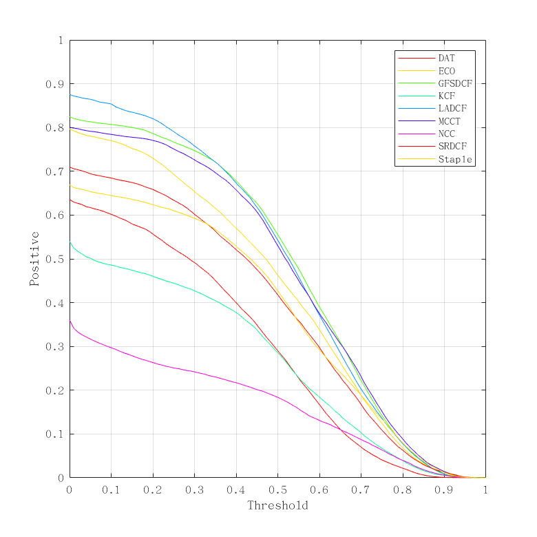
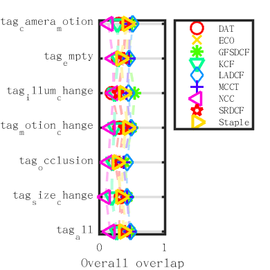
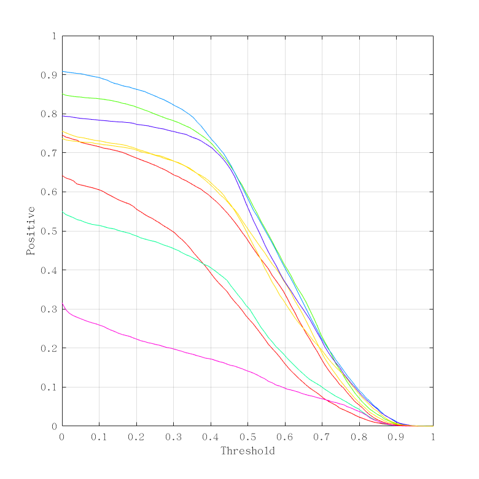
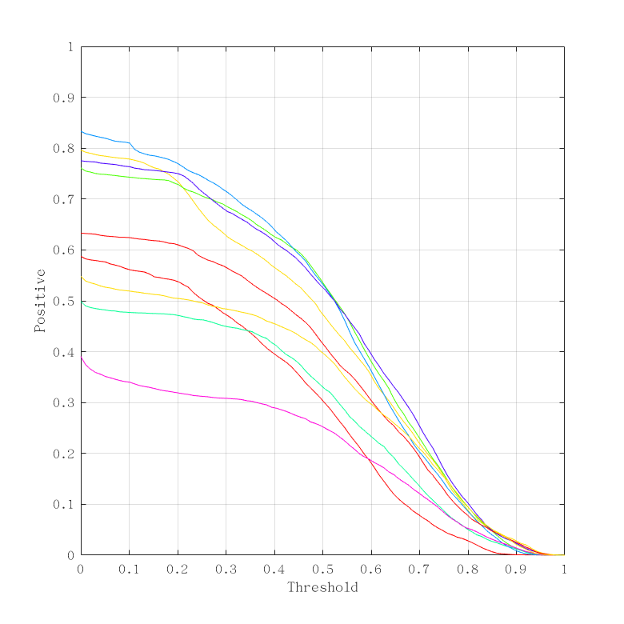
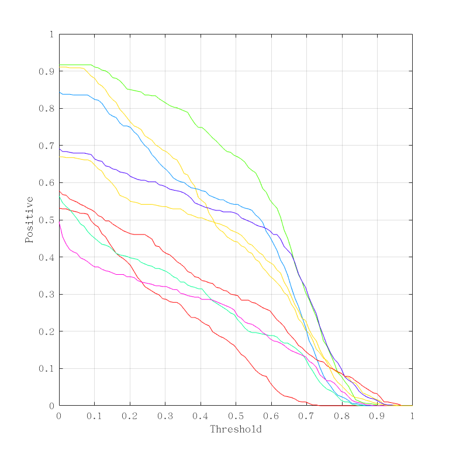
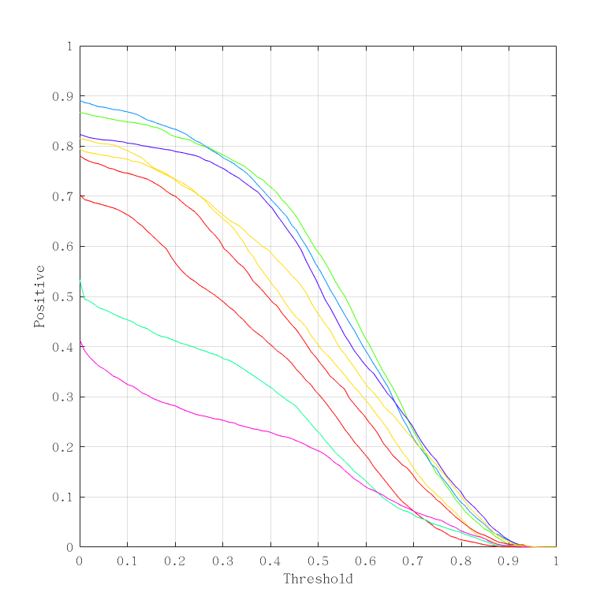
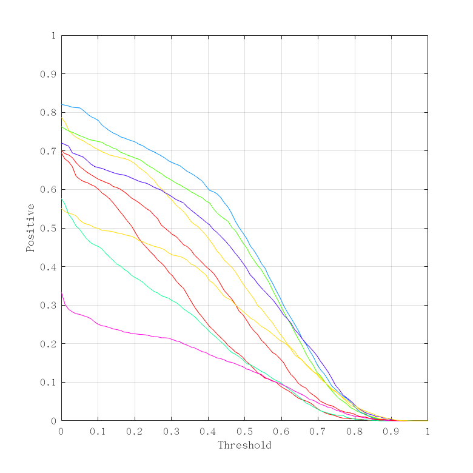
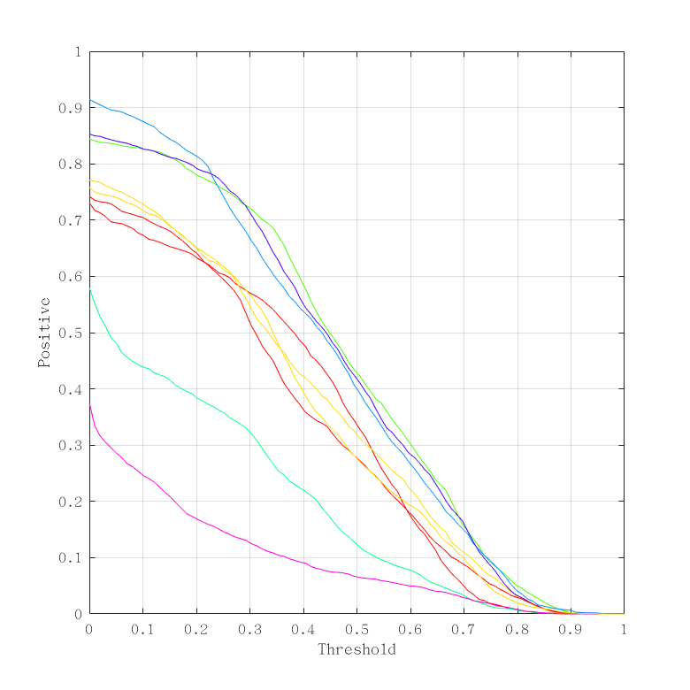

Overlap
Experiment unsupervised

Experiment unsupervised (average)
Overlap overview
| | tag_camera_motion | tag_empty | tag_illum_change | tag_motion_change | tag_occlusion | tag_size_change | tag_all |
|---|
| DAT | 0.2901 | 0.2844 | 0.1855 | 0.3045 | 0.2334 | 0.3284 | 0.2911 |
|---|
| ECO | 0.4239 | 0.4263 | 0.4434 | 0.4029 | 0.3519 | 0.3421 | 0.4190 |
|---|
| GFSDCF | 0.4898 | 0.4420 | 0.5391 | 0.4933 | 0.3877 | 0.4284 | 0.4688 |
|---|
| KCF | 0.2753 | 0.2819 | 0.2340 | 0.2262 | 0.1927 | 0.1864 | 0.2623 |
|---|
| LADCF | 0.5090 | 0.4532 | 0.4410 | 0.4892 | 0.4164 | 0.4204 | 0.4744 |
|---|
| MCCT | 0.4674 | 0.4490 | 0.4149 | 0.4685 | 0.3623 | 0.4205 | 0.4578 |
|---|
| NCC | 0.1342 | 0.2066 | 0.2139 | 0.1700 | 0.1303 | 0.0949 | 0.1633 |
|---|
| SRDCF | 0.4041 | 0.3633 | 0.2829 | 0.3759 | 0.2923 | 0.3171 | 0.3774 |
|---|
| Staple | 0.4188 | 0.3252 | 0.3694 | 0.4272 | 0.2693 | 0.3293 | 0.3722 |
|---|
Detailed plots

Orderings for overall overlap

Overlap plot for tag tag_camera_motion in experiment unsupervised

Overlap plot for tag tag_empty in experiment unsupervised

Overlap plot for tag tag_illum_change in experiment unsupervised

Overlap plot for tag tag_motion_change in experiment unsupervised

Overlap plot for tag tag_occlusion in experiment unsupervised

Overlap plot for tag tag_size_change in experiment unsupervised